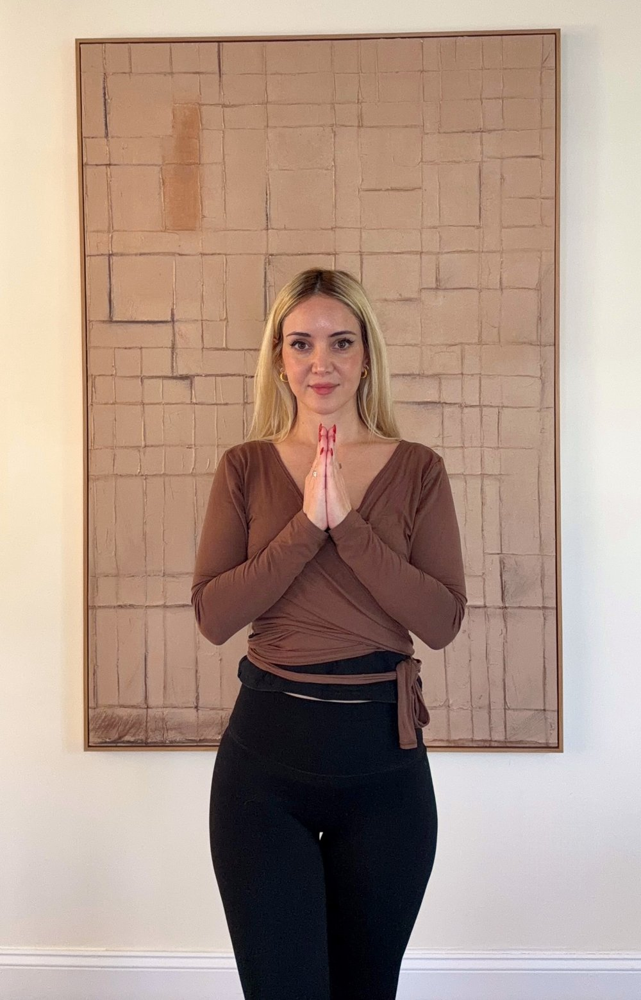

Prenatal & Postnatal Yoga
A small group for expecting and new mothers, online and in person in Port Washington, NY. If you're pregnant or recently postpartum, join the waitlist and I'll let you know when sessions begin.
Join the waitlistA place to breathe, rest and come back to yourself, in every season of your life. Whether you're trying to conceive, finding your feet after a baby, moving through perimenopause, or holding a full and busy life, there's room for you here. Traditional Hatha Yoga for women, live online from New York. Every body, every level.

A Hatha practice builds from within. When your relationship with yourself becomes steady, everything else has something to rest on. Whatever falls apart in life, what you build through practice stays with you. I am a guide. You are doing the work. That is how resilience is built.
Three ways to begin. Each one is open now.
A complete traditional practice for body, breath and mind. Leave steadier in your body, softer in your breath and quieter in your mind.
Whether you're just starting to try or have been on this path for a while, this is 75 minutes to come home to your body. To soften, to breathe, and to feel warm, open and alive in yourself.
An intimate group of 6 to 8 women, held, not lost. A space where the women beside you understand, because they are in it too.
Each class is complete on its own. The 6-week series builds week by week, your body, breath and nervous system deepen together over time.
One to one guidance for when you need to come back to yourself. Every session is shaped around you and where you are.
Moving through a fertility journey? Private sessions can be shaped entirely around your cycle, your body, and where you are right now.
New here? Once you book, your Zoom link arrives by email. Join a few minutes early, camera on or off, and I'll greet you by name.
No music, the attention moves inward. Poses are held a little longer than in a vinyasa class, giving your body time to open and settle. No headstands or advanced poses. Every class ends with Yoga Nidra: a guided rest where you lie down completely. You can turn your camera off during that, the time is entirely yours.
Hatha is where yoga begins. Every body, every age, every level is welcome here. Having your camera on simply helps me offer you a variation in real time, but you are always in charge of your practice. My first priority is that you feel safe and that you enjoy it.
Offered as seva, service without expectation. Open to everyone, 15 spots each month. No commitment, no payment. Just come.
Write to me and I'll send you the link before each class.
Save a spot
I've been practicing yoga for about 15 years, and for a long time I felt there was something more than the physical movement, something I couldn't explain. The more I searched and learned about yoga, the more certain I became that I had to follow this path. The time just wasn't right yet.
My path led me to New York. Then I became a mom, left my tech job, and finally took the leap of faith: I trained in traditional Hatha Yoga, in one of the oldest lineages in the West, with a direct connection to India. This is the yoga that has been passed from teacher to student for thousands of years, the practice they still follow in India as their Sadhana, their spiritual practice. It's where my study of yogic philosophy went deeper than I ever expected.
Yogic philosophy teaches us to follow our dharma, our true purpose, in order to live a happy life. Your dharma will find you, even if you never thought of it. Mine found me: teaching traditional Hatha is how I live my dharma and honor this tradition. I keep studying and learning, and I offer my students what yoga gives: a healthy body, mind and soul. I teach with devotion, adapting what needs adapting for modern life without losing the essence of this ancient practice. I see myself as a vessel, carrying this knowledge forward and keeping it alive.
The door is always open. Come when you're ready.
Join a waitlist and you'll be the first to hear when these open.
A small group for expecting and new mothers, online and in person in Port Washington, NY. If you're pregnant or recently postpartum, join the waitlist and I'll let you know when sessions begin.
Join the waitlistA 6-week beginner immersion in the traditional system: the breath, the body, the mind and how they come together. Ten spots, $197 for the full course.
Join the waitlistSmall in-person groups for Yoga for Fertility and Prenatal & Postnatal Yoga in Port Washington, Long Island. Tell me you're interested and you'll be the first to know when the space opens.
Let me knowNo. Hatha Yoga is where yoga begins. Every level is welcome, the poses are always offered with variations so you practice in a way that is right for your body today.
No. Hatha classes are pay as you go, with no membership or package. For Yoga for Fertility you can come to a single drop-in, or join the 6-week series if you'd like the practice to build week by week.
A yoga mat, enough floor space to lie down, and a device with a camera. That's it. Wear something comfortable you can move in. Having your camera on helps me offer you a variation in real time, but you are always in charge.
Your Zoom link is in your booking confirmation email. Click it a few minutes before class, on your computer, tablet or phone. On a phone or tablet, download the free Zoom app first.
Yoga Nidra means yogic sleep, a guided practice where you lie down completely still while I lead your awareness through the body. It is deeply restorative. You don't need to do anything except be there. Most students find it the part of class they look forward to most.
Hatha is slower and more deliberate. Poses are held longer, there is no music, and the practice works with breath and stillness rather than flow and movement. Less about the workout, more about what happens inside.
Yes. The class is open to any woman on a fertility journey, whether you are trying naturally, between cycles, or in the middle of treatment. You don't need to explain where you are. You just come.
Yes, you're welcome to keep practicing with me. Just let me know before class, and keep me updated as your pregnancy goes on, so I can adjust the poses for you. Please check with your doctor or midwife too.
Classes are live, so we practice together in real time. If you're in the 6-week Yoga for Fertility series and miss a class, I'll send you a private recording so you can catch up.
Yes. Your booking details and anything you share in the booking form are stored securely by Acuity, my booking system, and payments go through PayPal. I never share your information.
Please cancel at least 24 hours before your class. Late cancellations and no-shows are charged in full, this holds your commitment to the practice and respects the spot held for you.
Check your spam or promotions folder first, sometimes it lands there. If it's not there, write to me and I'll send your Zoom link directly.
Tell me a little about where you are and what you're looking for. I read every message myself and reply within 24 hours, personally.
Prefer to book straight away? Choose a class time in my calendar.